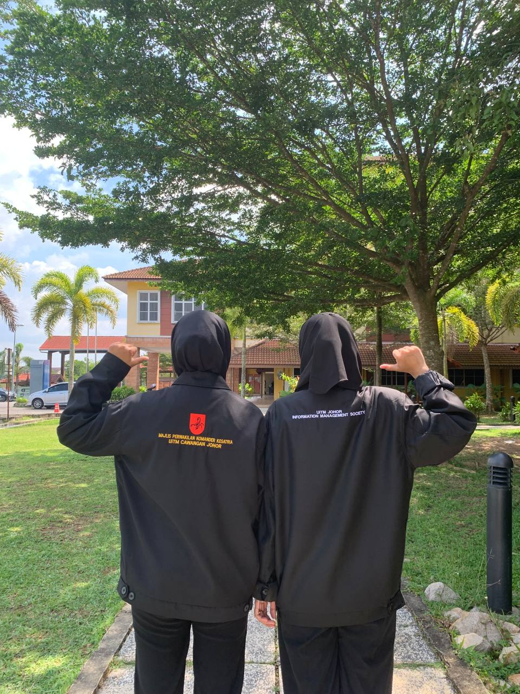

| Education Institution |
Explanation |
Primary School  |
I went to primary school at Sekolah Kebangsaan Sungai Tongkang. This school is located in Kampung Sungai Tongkang, Rengit. I started school at the age of 5 in preschool. My father worked as an operations assistant at the same school. Starting from primary school, I started learning and participating in various activities, whether academic or sports. Therefore, I gained a lot of experience and certificates. In addition, I was also entrusted by the teachers to be a school superintendent. Although I actively participated in various activities, I also did not neglect to work hard in academics. |
Secondary School  |
After entering secondary school, I continued to actively participate in sports activities such as netball and aerobics. I represented my school in netball for four years. Academically, I represented Sekolah Menengah Kebangsaan Permata Jaya in khat competitions. Additionally, I enjoyed participating in various school-level competitions, such as creating Hari Raya cards, storytelling, and poetry. Despite these extracurricular activities, I remained dedicated to my studies, aiming for excellence in the Malaysian Certificate of Education (SPM). Alhamdulillah, with the prayers of those around me and my own efforts, I achieved outstanding examination results. |
| University  |
Alhamdulillah, with the result, I was able to continue my studies at the university level. I took the field of information management at UiTM Segamat. In this field, I learned a lot of knowledge (you can click on the resume image above). In addition, to gain more experience and improve my skills, I registered for the club and association of my major, namely the Information Management Society (IMS). I participated in this association for 4 semesters. A lot of experience and knowledge was gained from the programs organized by the association because I joined a committee that followed and was in the process of organizing programs run by IMS. |